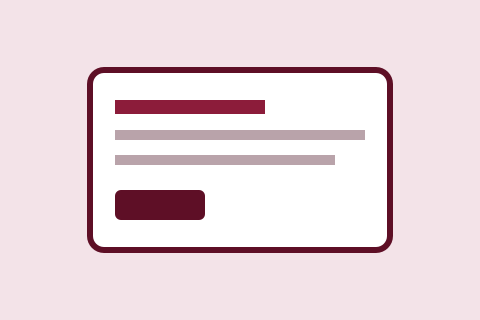

Technical interests
Web accessibility
Accessibility means designing digital products that people with a wide range of abilities can use. I am interested in the Web Content Accessibility Guidelines (WCAG), semantic HTML, keyboard navigation and how assistive technologies such as screen readers interpret a page.
I want to build a career where accessibility is considered from the first design discussion, not added at the end. It is good for users, reduces legal risk and widens the audience of a product.

Usability and UX design
I enjoy understanding how people actually use software. Heuristic evaluation, user-centred design and iterative prototyping help teams find problems early, when they are cheapest to fix.
I'm drawn to usability because even well-built software fails if people can't figure out how to use it. Through my coursework I've started learning how to evaluate interfaces using Nielsen's heuristics, and I want to keep building on this by testing my own designs and improving them based on what I find. Whether I end up in software, data or games, understanding how people interact with a product is a skill I want to take with me.
Front-end development
I like turning designs into fast, responsive interfaces using HTML, CSS and JavaScript. I am keen to improve my understanding of performance, responsive layout and writing maintainable code under version control.
I've been building this portfolio with HTML, CSS and JavaScript, which has shown me how structure, style and behaviour work together. Alongside this, I've worked with Python, Java and SQL, and I'm most confident with Python and SQL. On a placement I want to grow in responsive design, writing clean and maintainable code, and working with version control in a team. I'm also keen to learn how front-end work connects to data and back-end systems, and how I can combine my programming and data skills to build useful, accessible products.